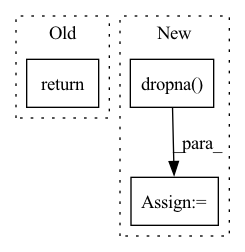

Pattern ID :26988
Before Change
target = rawdata.loc[:, target_variable].values
target = target.reshape((len(target), 1))
dataset = np.hstack(([data_dict[k] for k in data_dict] + [target]))
return dataset
def gen_model_input(dataset, n_timesteps, drop_missing_ys=True):After Change
// drop any rows still with missing X data, in case fill_na_func doesn"t get full coverage
rawdata = rawdata.loc[rawdata.loc[:,variables].dropna().index, :].reset_index(drop=True)
for_ragged = for_ragged.loc[rawdata.loc[:,variables].dropna() .index, :].reset_index(drop=True)
// returning array, target variable at the end
data_dict = {}In pattern: SUPERPATTERN
Frequency: 3
Non-data size: 3
Instances Fragment ID: 80361962
Project Name: dhopp1/nowcast_lstm
Commit Name: 82a1a2d59ac6f79e3a11c8d000c0c743de02054f
Time: 2020-12-15
Author: daniel.hopp1@gmail.com
File Name: nowcast_lstm/data_setup.py
M Class Name: AnonimousClass
N Class Name: AnonimousClass
M Method Name: gen_dataset(5)
N Method Name: gen_dataset(5)
M Parent Class:
N Parent Class:
M File Name: nowcast_lstm/data_setup.py
N File Name: nowcast_lstm/data_setup.py
M Start Line: 120
M End Line: 121
N Start Line: 96
N End Line: 138
Before Change
if task_type in [TaskType.BINARY, TaskType.MULTICLASS]:
return task_type, sorted(observed_labels.dropna().unique()), model_classes
else:
return task_type, None, None
def infer_by_class_number(num_classes):After Change
task_type = TaskType.REGRESSION
if task_type in (TaskType.BINARY, TaskType.MULTICLASS):
observed_classes = sorted(labels.dropna() .unique().tolist())
else:
observed_classes = None
Fragment ID: 80361961
Project Name: deepchecks/deepchecks
Commit Name: f6ec20716bfe7a2ea40b4d2707cec4936156e967
Time: 2022-12-21
Author: matan@deepchecks.com
File Name: deepchecks/tabular/utils/task_inference.py
M Class Name: AnonimousClass
N Class Name: AnonimousClass
M Method Name: infer_task_type_and_classes(6)
N Method Name: infer_task_type_and_classes(4)
M Parent Class:
N Parent Class:
M File Name: deepchecks/tabular/utils/task_inference.py
N File Name: deepchecks/tabular/utils/task_inference.py
M Start Line: 52
M End Line: 97
N Start Line: 30
N End Line: 82
Before Change
n_samples = np.max([n_samples, 1000])
n_unique = column.nunique(dropna=True)
if is_string_column(column):
return (n_unique / n_samples) < max_categorical_ratio and n_unique <= max_categories_type_string
elif (is_float_dtype(column) and np.max(column % 1) > 0) or is_datetime_or_timedelta_dtype(column):
return (n_unique / n_samples) < max_categorical_ratio and n_unique <= max_categories_type_float_or_datetime
elif is_numeric_dtype(column):After Change
max_categories = max_categories_type_string
elif col_type == "float":
// If all values are natural numbers, treat as int
all_numbers_natural = np.max(pd.to_numeric(column).dropna() % 1) == 0
max_categories = max_categories_type_int if all_numbers_natural else max_categories_type_float_or_datetime
elif col_type == "time":
max_categories = max_categories_type_float_or_datetime Fragment ID: 80361958
Project Name: deepchecks/deepchecks
Commit Name: 9449798ca29a6da9149c9bfb1a80cc2afcd8e615
Time: 2023-04-09
Author: matan@deepchecks.com
File Name: deepchecks/utils/type_inference.py
M Class Name: AnonimousClass
N Class Name: AnonimousClass
M Method Name: is_categorical(5)
N Method Name: is_categorical(5)
M Parent Class:
N Parent Class:
M File Name: deepchecks/utils/type_inference.py
N File Name: deepchecks/utils/type_inference.py
M Start Line: 135
M End Line: 142
N Start Line: 137
N End Line: 151